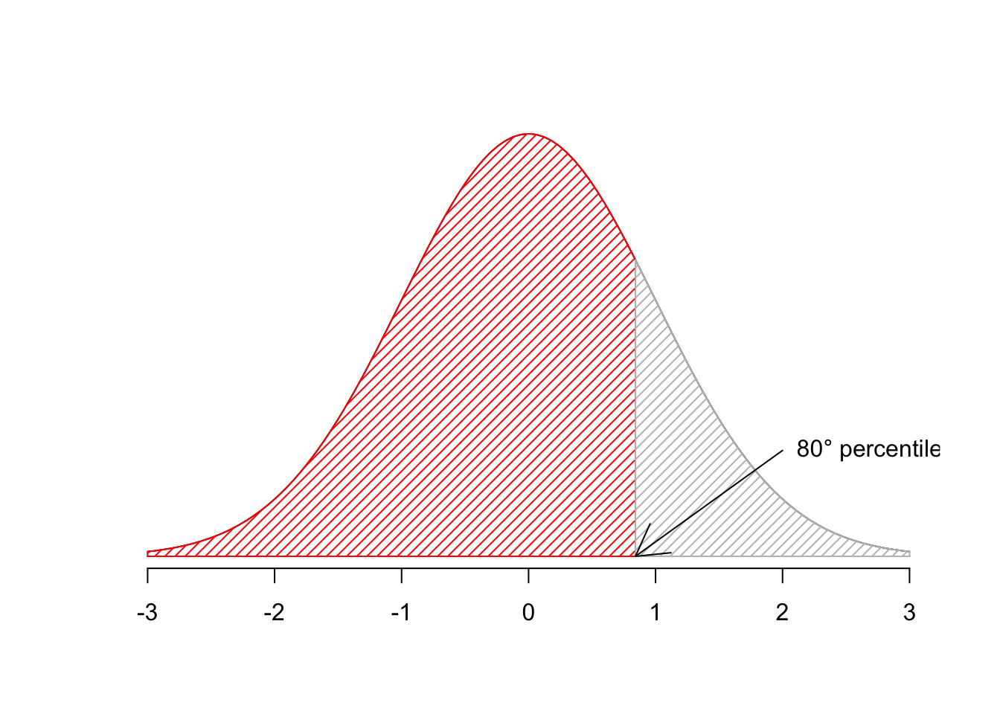
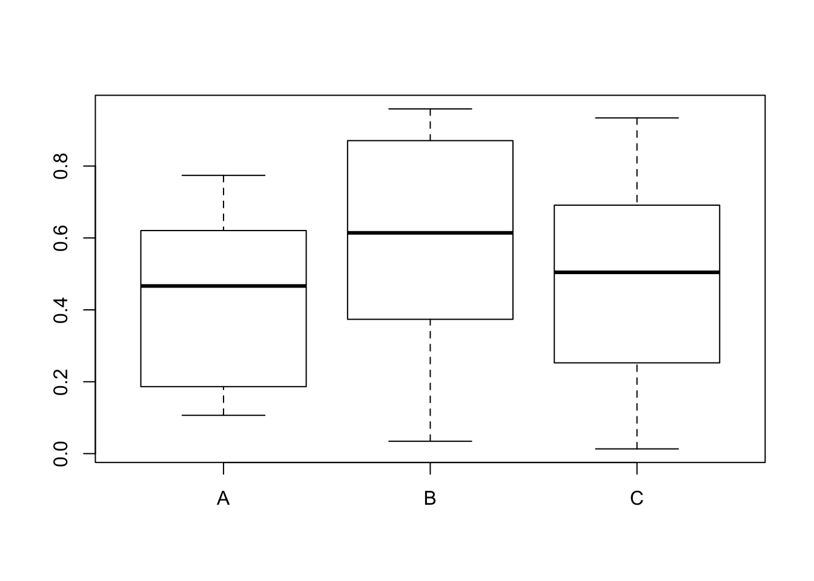
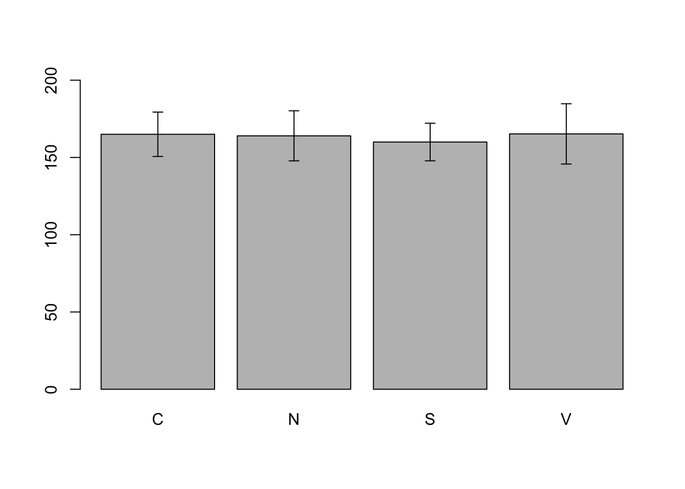
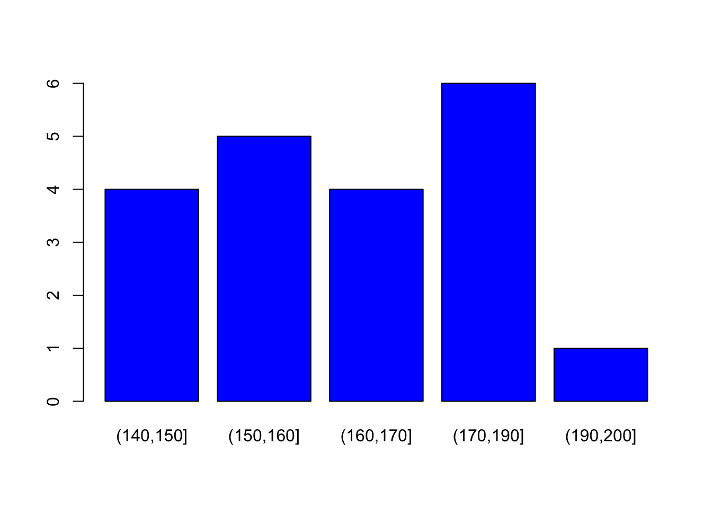

Capitolo 5 Primo passo: la descrizione dei dati raccolti
5.1 Le variabili quantitative: analisi chimiche e altre misurazioni fondamentali
In un precedente capitolo abbiamo visto che la replicazione è uno degli elementi fondamentali di un sperimento. Abbiamo anche visto che le \(n\) repliche effettuate sono solo un campione delle infinite misure che avremmo potuto fare, ma che non abbiamo fatto per insufficienza di risorse (usualmente tempo, spazio e lavoro). Di conseguenza, dopo aver terminato un esperimento ci troviamo con un collettivo di misure, che debbono essere riassunte e descritte.
Se i dati sono quantitativi (su scala continua o discreta), è possibile e necessario descrive almeno due caratteristiche del dataset, vale a dire:
- tendenza centrale (location)
- dispersione (shape)
Vediamo ora quali sono le statistiche più utilizzate per descrivere un campione.
5.1.1 Indicatori di tendenza centrale
La media aritmetica è un concetto molto intuitivo che non necessita di particolari spiegazioni: si calcola con R mediante la funzione mean(vettore). In Excel, si calcola con la funzione “=MEDIA(intervallo)”.
Per esempio, carichiamo il dataset ‘heights’ contenuto nel package ‘aomisc’ e calcoliamo la media delle altezze.
library(aomisc)
data(heights)
mean(heights$height)## [1] 164Un altro indicatore di tendenza centrale è la mediana, data dal valore che bipartisce la distribuzione di frequenza in modo da lasciare lo stesso numero di termini a sinistra e a destra. Se abbiamo una serie di individui ordinati in graduatoria, la mediana è data dall’ individuo che occupa il posto (n + 1)/2 o, se gli individui sono in numero pari, dalla media delle due osservazioni centrali. Il comando per calcolare la mediana in R è median(vettore). In Excel, si utilizza la funzione “=MEDIANA(intervallo)”.
La mediana è un indicatore più robusto della media: infatti, supponiamo di avere cinque valori:
1 - 4 - 7 - 9 - 10
La media è pari a 6.2, mentre la mediana è pari a 7 (valore centrale). Se cambiano il numero più alto in questo modo:
1 - 4 - 7 - 9 - 100
la media di questi cinque valori sarà 24.2, mentre la mediana sarà sempre pari a 7. Insomma, la mediana non è influenzata da valori estremi (outliers), in senso positivo o negativo.
median(heights$height)## [1] 162.55.1.2 Indicatori di variabilità
Gli indicatori di tendenza centrale, da soli, non ci informano su come le unità sperimentali tendono a differire l’una dall’altra: ad esempio una media pari a 100 può essere ottenuta con tre individui che misurano 99, 100 e 101 rispettivamente o con tre individui che misurano 1, 100 e 199. E’ evidente che in questo secondo gruppo gli individui sono molto più differenti tra loro (dispersi) che nel primo gruppo.
Pertanto, i risultati di un processo di misurazione non possono essere descritti solo con la media, ma è necessario anche calcolare un indice di variabilità. Tra essi, il più semplice è il campo di variazione, che è la differenza tra la misura più bassa e la misura più alta. In realtà, non si tratta di un vero e proprio indice di variabilità, in quanto dipende solo dai termini estremi della distribuzione e non necessariamente cresce al crescere della variabilità degli individui.
Invece del campo di variazione, possiamo utilizzare i cosiddetti percentili, che bipartiscono la popolazione di partenza in modo da lasciare una certa quantità di termini alla sua sinistra e la restante quantità alla sua destra. Ad esempio, il primo percentile bipartisce la popolazione in modo da lasciare a sinistra l’ 1% dei termini e alla destra il restante 99%. Allo stesso modo l’ ottantesimo percentile bipartisce la popolazione in modo da lasciare a sinistra l’80% dei termini e alla destra il restante 20%.
percentile <- 0.8
curve(dnorm(x),from=-3,to=3,axes=FALSE, ylab="", xlab="")
axis(1)
lines(c(-3,3),c(0,0))
valori.rosso<-seq(-3,qnorm(percentile),length=100)
x.rosso<-c(-3,valori.rosso,qnorm(percentile),-3)
y.rosso<-c(0,dnorm(valori.rosso),0,0)
polygon(x.rosso,y.rosso,density=20,angle=45, col="red")
valori.grigio<-seq(qnorm(percentile),3,length=100)
x.grigio<-c(qnorm(percentile),valori.grigio,3,qnorm(percentile))
y.grigio<-c(0,dnorm(valori.grigio),0,0)
polygon(x.grigio,y.grigio,density=20,angle=45, col="grey")
text(x=2,y=0.1,"80° percentile", pos=4)
arrows(2,0.1,qnorm(percentile),0)
Per descrivere la variabilità di un collettivo è possibile utilizzare, ad esempio, il 25esimo e il 75esimo percentile: se questi sono molto vicini, significa che il 50 % dei soggetti è compreso in un intervallo piccolo e quindi la variabilità della popolazione è bassa. Per calcolare questi due valori con Excel possiamo utilizzare le funzioni “=PERCENTILE.INC(intervallo, 0.25)” e “=PERCENTILE.INC(intervallo, 0.75)”. Per quanto riguarda R, i comandi sono dati più sotto.
quantile(heights$height, probs = c(0.25, 0.75))## 25% 75%
## 152.75 174.25A questo proposito, possiamo introdurre il concetto di boxplot (grafico Box-Whisker). Si tratta di una scatola che ha per estremi il 25esimo e il 75esimo percentile ed è tagliata da una linea centrale in corrispondenza della mediana. Dalla scatola partono due linee verticali che identificano il valore massimo e il minimo. Se il massimo (o il minimo) distano dalla mediana più di 1.5 volte la differenza tra la mediana stessa e il 75esimo (o 25esimo) percentile, allora le linee verticali si fermano ad un valore pari ad 1.5 volte il 75esimo (o il 25esimo) percentile rispettivamente ed i dati esterni vengono raffigurati come outliers. I boxplot sono solitamente usati per descrivere campioni numerosi nei quali esista un qualche criterio di raggruppamento. In basso abbiamo create tre gruppi con una funzione di estrazione di numeri casuali.
set.seed(1234)
A <- runif(20)
B <- runif(20)
C <- runif(20)
series <- rep(c("A", "B", "C"), each = 20)
values <- c(A, B, C)
boxplot(values ~ series)
Con Excel, non esiste una funzione in grado di disegnare un boxplot automaticamente e si possono seguire le indicazioni a questo link.
Oltre ad esprimere la variabilità di una popolazione con un intervallo (campo di variazione o coppia di percentili) è possibile utilizzare diversi indici sintetici di variabilità, tra cui i più diffusi sono la devianza, la varianza, la deviazione standard ed il coefficiente di variabilità.
La devianza (generalmente nota come SS, cioè somma dei quadrati) è data da:
\[SS = \sum\limits_{i = 1}^n {(x_i - \bar x)^2 }\]
Si tratta di un indicatore caratterizzato da significato geometrico molto preciso, collegabile alla somma dei quadrati delle distanze euclidee di ogni osservazione rispetto alla media. In R, non vi è una funzione per il calcolo della devianza (o meglio, esiste una possibilità nell’ambito dei modelli lineari, ma è troppo presto per introdurla…). Possiamo allora un’espressione del tipo:
sum( (heights$height - mean(heights$height))^2 )## [1] 4050Come misura di ’distanza’, la devianza ha alcune importanti proprietà (che vedremo meglio in seguito), ma essendo una somma, il valore finale dipende dal numero di scarti da sommare e quindi non è possibile operare confronti tra collettivi formati da un diverso numero di individui. Si può quindi definire un altro indice, detto varianza (nei software di uso più corrente si parla di varianza campionaria, e definito come segue:
\[\sigma^2 = \frac{SS}{n - 1}\]
La varianza permette di confrontare la variabilità di collettivi formati da un numero diverso di individui, anche se permane il problema che questo indicatore è espresso in un’unità di misura al quadrato, rispetto a quella delle osservazioni originali: ad esempio se le osservazioni sono espresse in metri, la varianza è espressa in metri quadrati.
Per eliminare questo problema si ricorre alla radice quadrata della varianza, cioè la deviazione standard, che si indica con s. La deviazione standard è espressa nella stessa unità di misura dei dati originari ed è quindi molto informativa sulla banda di oscillazione dei dati rispetto alla media.
Spesso la variabilità dei dati è in qualche modo proporzionale alla media: collettivi con una media alta hanno anche una variabilità alta e viceversa. Per questo motivo viene utilizzato spesso il coefficiente di variabilità:
\[CV = \frac{\sigma }{\mu } \times 100\]
che è un numero puro e non dipende dall’unità di misura e dall’ampiezza del collettivo, sicché è molto adatto ad esprimere ad esempio l’errore degli strumenti di misura e delle apparecchiature di analisi.
Varianza e deviazione standard sono molto facili da calcolare in R, grazie alle funzioni var(), sd(). In Excel, abbiamo le funzioni “=DEV.Q(intervallo)”, “=VAR(intervallo)” e “=DEV.ST(intervallo)”, rispettivamentep er devianza, varianza e deviazione standard.
In genere, la deviazione standard, per le sue caratteristiche, viene utilizzata come indicatore dell’incertezza assoluta associata ad una determinata misurazione, mentre il coefficiente di variabilità (incertezza relativa percentuale; CV), è molto adatto ad esprimere l’errore degli strumenti di misura e delle apparecchiature di analisi.
var(heights$height)## [1] 213.1579sd(heights$height)## [1] 14.59993sd(heights$height)/mean(heights$height) * 100## [1] 8.9023955.1.3 Arrotondamenti
Il calcolo della media e della deviazione standard (sia a mano che con il computer) porta all’ottenimento di un numero elevato di cifre decimali. E’ quindi lecito chiedersi quante cifre riportare nel riferire i risultati della misura. L’indicazione generale, da prendere con le dovute cautele è che nel caso della media si riportano un numero di cifre decimali pari a quello rilevato nella misura, mentre per gli indicatori di variabilità si dovrebbe utilizzare un decimale in più.
5.2 Descrizione dei sottogruppi
In biometria è molto comune che il gruppo di unità sperimentali sia divisibile in più sottogruppi, dei quali vogliamo conoscere alcune statistiche descrittive. Abbiamo già visto il boxplot; ora potremmo voler calcolare le medie per gruppo. Per questo, possiamo utilizzare la funzione ‘tapply()’:
with(heights, tapply(height, var, mean) )## C N S V
## 165.00 164.00 160.00 165.25dove height è la variabile che contiene i valori da mediare, var è la variabile che contiene la codifica di gruppo, mean è la funzione che dobbiamo calcolare. Ovviamente mean può essere sostituito da qualunque altra funzione ammissibile in R, come ad esempio la deviazione standard.
Spesso vogliamo calcolare più di una funzione (ad esempio, la media e la deviazione standard). Per questo possiamo utilizzare il package ‘plyr’ e la funzione ‘ddplyr()’.
library(plyr)
descript <- ddply(heights, ~var, summarise,
Media = mean(height),
SD = sd(height))
descript## var Media SD
## 1 C 165.00 14.36431
## 2 N 164.00 16.19877
## 3 S 160.00 12.16553
## 4 V 165.25 19.51709Con la funzione soprastante abbia creato un nuovo dataset (descript), che può essere utilizzato per il plotting, ad esempio per creare un grafico a dispersione, con l’indicazione della dispersione dei dati. Per sapere le coordinate relative al centro di ogni barra, dobbiamo creare un oggetto con la funzione ‘barplot()’. Questa funzione, oltre che disegnare il grafico, restituisce appunto le coordinate necessarie.
coord <- barplot(descript$Media, names.arg = descript$var,
ylim = c(0, 200))
arrows(coord, descript$Media - descript$SD,
coord, descript$Media + descript$SD,
length = 0.05, angle = 90, code = 3)
Il grafico non è bellissimo; per ora ci accontenteremo, ma può essere migliorate con un po’ di esercizio.
In Excel, è molto conveniente utilizzare la funzione “tabella pivot”.
5.3 Distribuzioni di frequenza e classamento
Avendo a che fare con variabili qualitative, possiamo considerare la frequenza assoluta, cioè il numero degli individui che presentano una certa modalità. Ad esempio, se su 500 insetti 100 sono eterotteri, 200 sono imenotteri e 150 sono ortotteri, possiamo concludere che la frequenza assoluta degli eterotteri è pari a 100.
Oltre alle frequenze assolute, possiamo considerare anche le frequenze relative, che si calcolano dividendo le frequenze assolute per il numero totale degli individui del collettivo. Nel caso prima accennato, la frequenza relativa degli eterotteri è pari a 100/500, cioè 0.2.
Se abbiamo una variabile nella quale le modalità possono essere logicamente ordinate, oltre alle frequenze assolute e relative possiamo prendere in considerazione le cosiddette frequenze cumulate, che si ottengono cumulando i valori di tutte le classi di frequenza che precedono quella considerata.
Le distribuzioni di frequenza possono essere costruite anche per le variabili quantitative, tramite un’operazione di classamento, che consiste nel creare classi con intervalli opportuni. Su queste distribuzioni di frequenza possiamo quindi calcolare frequenze assolute, relative e cumulate. In genere, se abbiamo un collettivo molto numeroso è conveniente aggregare i dati in forma di distribuzioni di frequenza, perché la lettura delle informazioni è molto più facile. Qui facciamo un esempio, anche se il dataset che utilizzeremo (‘heights’) non è così numeroso.
Vogliamo:
- valutare la distribuzione delle frequenze assolute, relative e percentuali degli individui di ciascuna varietà;
- valutare la distribuzione delle frequenze assolute, relative, percentuali e cumulate dell’ altezza degli individui, considerando classi di ampiezza pari a 5 cm;
- disegnare la torta delle frequenze relative della varietà e l’istogramma delle frequenze assolute dell’altezza.
La soluzione al punto 1 con R è facile, attraverso l’impiego della funzione table(). La funzione length() restituisce il numero di elementi in un vettore.
#Frequenze assolute
table(heights$var)##
## C N S V
## 7 6 3 4#Frequenze relative
with(heights, table(var)/length(var) ) ## var
## C N S V
## 0.35 0.30 0.15 0.20#Frequenze percentuali
with(heights, table(var)/length(var) * 100 )## var
## C N S V
## 35 30 15 20Per la variabile altezza, che è di tipo quantitativo, si utilizza lo stesso comando table(vettore), ma occorre specificare l’ampiezza delle classi di frequenza con la funzione cut() e l’argomento breaks(), con il quale vengono specificati gli estremi superiori della classe (inclusi per default nella classe stessa). Per le frequenze cumulate si usa invece la funzione cumsum().
freq <- table(cut (heights$height,
breaks = c(140,150,160,170,190,200)))
freq##
## (140,150] (150,160] (160,170] (170,190] (190,200]
## 4 5 4 6 1Per disegnare i grafici si utilizzano le funzioni pie() e barplot().
pie(table(heights$var))
barplot(freq, col="blue") 
In Excel, l’operazione di classamento può essere effettuata utilizzando la formula “=FREQUENZA(matriceDati, matriceClassi)”, che tuttavia è una formula di matrice e quindi deve essere immessa in un intervallo e consolidata con la combinazione tasti “SHIFT+CTRL+INVIO”.
5.4 Statistiche descrittive per le distribuzioni di frequenza
Il più semplice indicatore di tendenza centrale, utilizzabile con qualunque tipo di dati è la moda, cioè il valore della classe che presenta la maggior frequenza. Ovviamente, se la variabile è quantitativa, si assume come moda il punto centrale della classe con maggior frequenza. L’individuazione della moda è banale e non richiede calcoli di sorta.
Nel caso di distribuzioni di frequenza per caratteri ordinabili (qualitativi e quantitativi), oltre alla moda possiamo calcolare la mediana e gli altri percentili.
Oltre a questi, per le distribuzioni di frequenza dicaratteri quantitativi è anche possibile calcolare la media, come illustrato in precedenza, insiema tutti gli indicatori di variabilità già citati.
5.5 Distribuzioni di frequenza bivariate: le tabelle di contingenza
In alcuni casi in ciascuna unità sperimentale del collettivo vengono studiati due (o più) caratteri e, di conseguenza, si ha a che fare con distribuzioni di frequenza bivariate (o multivariate). In questo caso si possono costruire delle tabelle di contingenza, cioè delle tabelle a due entrate nelle quali ogni numero rappresenta la frequenza congiunta (in genere assoluta) per una particolare combinazione delle due variabili.
Ad esempio consideriamo le variabili Varietà (con i valori SANREMO e FANO) e ‘Forma delle bacche’ (con i valori LUNGO, TONDO, OVALE), riportati nella tabella di contingenza che creeremo come matrice.
tabCon <- matrix(c(37, 45, 32, 74, 61, 59), nrow = 2, ncol = 3,
byrow = F)
row.names(tabCon) <- c("SANREMO", "FANO")
colnames(tabCon) <- c("LUNGO", "TONDO", "OVALE")
tabCon## LUNGO TONDO OVALE
## SANREMO 37 45 32
## FANO 74 61 59Ogni riga della tabella sovrastante costituisce una distribuzione condizionata della forma del frutto, dato un certo valore della Varietà, mentre ogni colonna costituisce una distribuzione condizionata della Varietà, data una certa forma del frutto.
5.6 Connessione
Se guardiamo le due distribuzioni condizionate per SANREMO e FANO possiamo notare che esiste una certa differenza. Potremmo chiederci quindi se il presentarsi di una data modalità del carattere Varietà (SANREMO o FANO) influenza il presentarsi di una particolare modalità del carattere Forma del frutto. Se ciò non è vero si parla di indipendenza delle variabili (allora le distribuzioni condizionate sono uguali) altrimenti si parla di dipendenza o connessione. In caso di indipendenza, le distribuzioni condizionate delle due variabili dovrebbero essere uguali tra loro, cioè la frequenza relativa condizionale di X per una data modalità di Y deve essere uguale alla frequenza relativa condizionale di X per l’altra modalità di Y e quindi alla frequenza marginale di X.
Ad esempio, per il carattere LUNGO la frequenza relativa marginale è pari ad 82/308=0.266 (82 è la somma dei pomodori di forma allungata, mentre 308 è il numero totale dei pomodori); in caso di indipendenza, questa frequenza dovrebbe essere la stessa, indipendentemente dal fatto che il pomodoro sia di varietà SANREMO oppure Fano. In cifre, la frequenza assoluta condizionata per LUNGO|SANREMO dovrebbe essere pari a 0.266x130=34.6. mentre LUNGO|FANO dovrebbe essere pari a 0.266x178=47.4. Con questi principi, possiamo costruire la tabella delle frequenze assolute attese, in caso di indipendenza completa tra i due caratteri.
expF <- matrix(c(34.6, 47.4, 44.7, 61.3, 50.6, 69.4),
nrow = 2, ncol = 3,
byrow = F)
row.names(expF) <- c("SANREMO", "FANO")
colnames(expF) <- c("LUNGO", "TONDO", "OVALE")A questo punto è logico costruire un indice statistico di connessione, detto \(\chi^2\), che misuri lo scostamento tra le frequenze osservate e quelle attese nell’ipotesi di indipendenza perfetta:
\[\chi ^2 = \frac{{\left( {f_o - f_a } \right)^2 }}{{f_a }}\]
dove \(f_o\) sta per frequenza osservata ed \(f_a\) sta per frequenza attesa nel caso indipendenza. Questo indice assume valore pari a zero nel caso di indipendenza completa (le frequenze osservate sono uguali a quelle attese) ed assume un valore positivo tanto più alto quanto maggiore è la connessione tra i due caratteri, fino ad un valore massimo dato dal prodotto del numero degli individui per il valore minimo tra il numero di righe - 1 e il numero di colonne - 1:
\[\max \chi ^2 = n \cdot \min (r - 1,\,c - 1)\]
Nel nostro caso, potremmo calcolare il chi quadro in questo modo:
sum( ((tabCon - expF) ^ 2) /expF )## [1] 10.22348Esiste anche un comando più semplice, che consiste nell’utilizzare la funzione as.table() per forzare la matrice dati in una tabella di contingenza ed applicare la funzione ‘summary()’.
summary( as.table (tabCon))## Number of cases in table: 308
## Number of factors: 2
## Test for independence of all factors:
## Chisq = 2.1235, df = 2, p-value = 0.3459Il valore massimo di chi quadro è pari a 308 e di conseguenza il valore osservato, espresso in relazione al valore massimo è pari a 10.22/308=0.033. Si può quindi concludere che la connessione tra i due caratteri è piuttosto debole.
5.7 Correlazione
Se abbiamo a che fare con variabili quantitative, possiamo calcolare l’indice di connessione previa opportuna divisione in classi di frequenza delle due variabili in studio. Oltre a ciò, con variabili quantitative è possibile esplorare l’esistenza della cosidetta relazione di variazione congiunta, che si ha quando al variare di una variabile cambia anche il valore dell’altra.
La variazione congiunta si quantifica tramite il coefficiente di correlazione costituito dal rapporto tra la codevianza (o somma dei prodotti) delle due variabili e il prodotto delle loro devianze. Il coefficiente di correlazione varia tra -1 e +1: un valore pari a +1 indica concordanza perfetta (tanto aumenta una variabile, tanto aumenta l’altra), mentre un valore pari a -1 indica discordanza perfetta (tanto aumenta una variabile tanto diminuisce l’altra). Un valore pari a 0 indica assenza di qualunque grado di variazione congiunta tra le due variabili (assenza di correlazione). Valori intermedi tra quelli anzidetti indicano correlazione positiva (se positivi) e negativa (se negativi).
In R, per calcolare la correlazione tra due variabili si usa la funzione cor(). In Excel, abbiamo la funzione “=CORRELAZIONE(intervallo1, intervallo2)”
Proviamo a considerare questo esempio: il contenuto di olio di 9 lotti di acheni di girasole è stato misurato con due metodi diversi ed è riportato più sotto.
a <- c(45, 47, 49, 51, 44, 37, 48, 44, 53)
b <- c(44, 44, 49, 53, 48, 34, 47, 46, 51)Valutare la correlazione tra i risultati dei due metodi di analisi.
cor(a, b)## [1] 0.8960795Possiamo osservare che il coefficiente di correlazione è abbastanza vicino ad 1 e quindi possiamo concludere che esiste un buon grado di concordanza tra i due metodi di analisi.
5.8 Esercizi
5.8.1 Esercizio 1
Scaricare il file EXCEL ‘rimsulfuron.xlsx’. In questo file sono riportati i risultati di un esperimento con 15 trattamenti e 4 repliche, nel quale sono stati posti a confronti diversi erbicidi e/o dosi per il diserbo nel mais. Calcolare le medie produttive ottenute con le diverse tesi sperimentali e riportarle su un grafico, includendo anche un’indicazione di variabilità. Verificare se la produzione è correlata con l’altezza delle piante e commentare i risultati ottenuti. Il file può essere scaricato da questo link.
5.8.2 Esercizio 2
Caricare il datasets ‘students’ disponibile nel package ‘aomisc’. In questo file potete trovare una database relativo alla valutazione degli studenti in alcune materie del primo anno di Agraria. Ogni record rappresenta un esame, con il relativo voto, la materia e la scuola di provenienza dello studente. Con un uso appropriato delle tabelle di contingenza e del chi quadro, valutare se il voto dipende dalla materia e dalla scuola di provenienza dello studente.